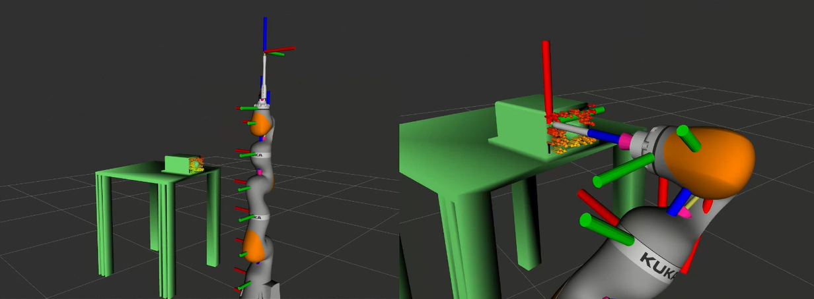
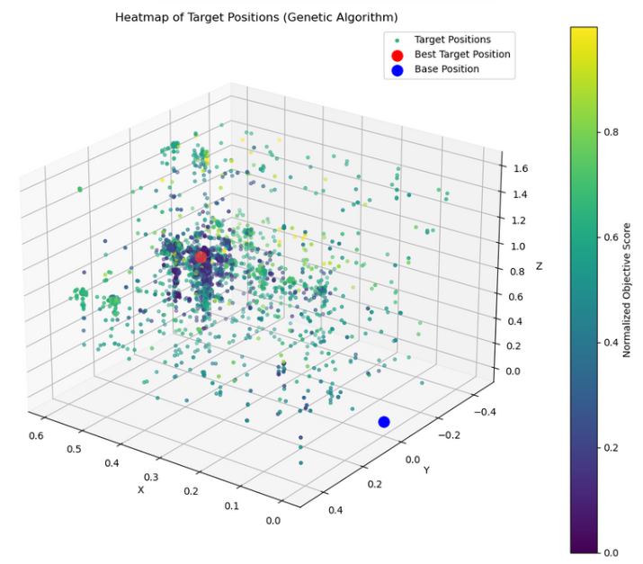
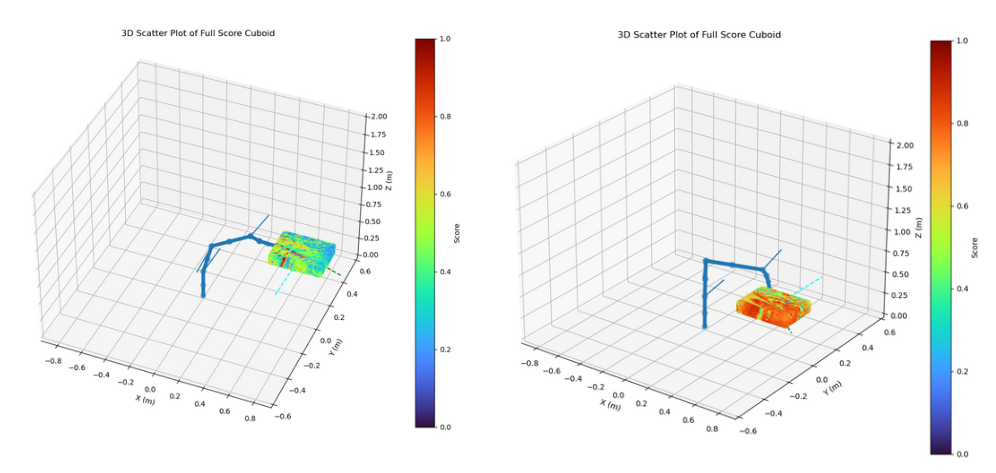
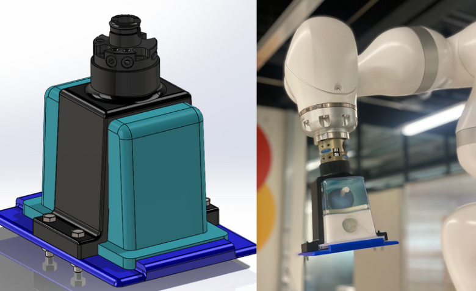

Internship Project – PRONOBIS: Robotic Assistance for Prostate Interventions
As part of the research project PRONOBIS, my internship at CRTA focused on developing and evaluating robot-assisted solutions for prostate ultrasound planning and biopsy automation. The goal was to ensure safe and precise interventions by optimizing robot–patient positioning, anticipating involuntary patient motions, and implementing adaptive tracking strategies. Using the KUKA LBR iiwa 14 and the KUKA Med 7 robots, I explored kinematic analysis, manipulability, and motion feasibility to guarantee reliable performance during medical interventions.
🔹 Phase 1 – Kinematic & Safety Analysis
As a first step, I carried out a detailed kinematic analysis of the KUKA LBR iiwa 14 robot to evaluate its suitability for prostate interventions. This included studying both forward and inverse kinematics in order to establish the relationship between joint configurations and the end-effector position/orientation. Using Python and MATLAB Simulink, I analyzed the Denavit–Hartenberg parameters, computed the Jacobian matrix, and explored different methods for calculating and identifying singularities, ensuring safe and efficient robot operation during medical procedures.🔹 Phase 2 – Mechanical Feasibility and Reachability analysis
To assess the mechanical feasibility and reachability of the KUKA robot during prostate interventions, I conducted an in-depth analysis combining simulation and algorithmic methods. Using the Reach ROS2 package, I generated reachability maps to visualize the robot’s dexterous workspace and identify optimal regions for safe operation.  To refine patient–robot positioning, I applied a genetic algorithm that optimized placement while avoiding singularities and joint-limit risks.  In parallel, I developed a Python script that modeled the patient’s involuntary movements as a cuboid volume and evaluated whether the robot could safely follow these motions without losing manipulability or entering unsafe configurations.
🔹 Phase 3 – Patient mouvement simulation with the KUKA Med 7 & Patient Motion Tracking
For patient motion simulation and tracking, I used the KUKA LBR Med 7 robot to replicate involuntary movements such as breathing and minor prostate shifts. A mechanical support designed in SolidWorks and 3D-printed held the phantom securely while allowing controlled motion. Using ROS2 nodes, I generated translations and rotations in simulation (RViz) and on real hardware. The main KUKA LBR iiwa 14 robot employed torque sensors to measure interaction forces and feed them into a ForceCompensationNode, a PI-controller-based strategy in ROS2 that adaptively corrected the robot’s end-effector position in real time. This allowed the system to track patient motion precisely without external sensors, ensuring safe and accurate intervention throughout the procedure. 
Outcome
Through my work, I enabled the robot to safely follow patient-specific involuntary movements for real-time adaptive control. I also helped optimize robot placements using reachability maps and genetic algorithms to avoid singularities and joint-limit risks, ensuring safe and precise operation. This experience allowed me to gain hands-on expertise in manipulating KUKA robots, ROS2 programming, and working in a medical research environment, while understanding the critical role of precision and safety in robot-assisted prostate interventions.
← Back to Projects